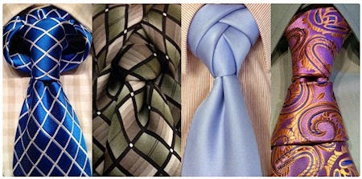
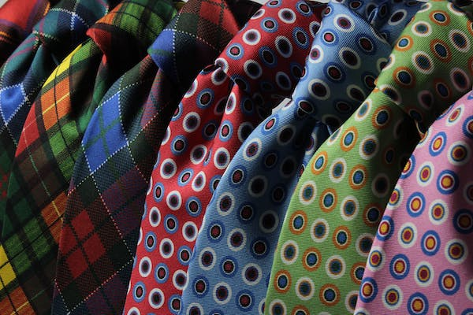

About Us
This site is dedicated to teaching and simplifying the process of tying new and interesting knots for neckties and bowties. This will be accomplished through easy to understand text descriptions and explanations for each knot, as well simple diagrams for some, all ranked on difficulty, length, and style. From a simple four in hand knot, to an intricate eldredge, to a complex bowtie, this website will help you look good and stand out whatever the occasion or event.
As you browse this site, you can expect to find the right knot for your occasion, what style of shirt it will pair well with, and what style and type of fabric tie should be used to emphasize the knot and make it look good. You will also find advice on how to adjust the tie length, tightness of the knot, and anything else you may need to fine-tune your tie. This site is geared towards all skill levels, so it is an easy place to start learning new knots and tie styles
